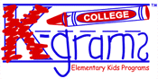
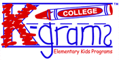

|  | 2002-2003 Hall Heads! |
||
|
|||
| . | |||
|  | 2002-2003 Hall Heads! |
||
|
|||
| . | |||
|
|
Marisha Sunday,
Hall Head - Alice Lloyd Favorite
Recess Game - Lightning |
| Fernando
Yarza, Hall Head - Alice Lloyd Favorite
Recess Game - Tetherball |
|
|
|
Jennifer
Carter, Hall Head - West Quad,
Betsy Barbour & Helen Newberry Favorite Recess Game
- Monkey in the Middle |
| Megan
Melvin, Hall Head - West Quad,
Betsy Barbour & Helen Newberry Favorite
Recess Game - Four Square |
|
|
|
Nicole
Bober, Hall Head - Bursley Favorite
Recess Game - Red Rover |
| Heather
McManus, Hall Head - Bursley Favorite
Recess Game - Soccer |
|
|
|
Lindsay
Bozicevich, Hall Head - Couzens Favorite
Recess Game - Red Rover |
| Erin
Page, Hall Head - Couzens Favorite
Recess Game - Swings |
|
|
|
Favorite
Recess Game - Four Square |
| Yuri
Kashima, Hall
Head - East Quad Favorite
Recess Game - don't touch the ground!!! and twister! ahhhh! |
|
|
|
Kavita
Padiyar, Hall Head - East
Quad Favorite
Recess Game - Blowing in the Wind |
| David
Hoffman, Hall
Head - Stockwell Favorite
Recess Game - Kickball |
|
|
|
Kaitlin
Murphy,
Hall Head - Stockwell Favorite
Recess Game - |
| Nicole
Johnson, BookMARK Coordinator Favorite
Recess Game - Tag |
|
|
|
Jeana
Plas, Hall Head - Markley Favorite
Recess Game - Kickball |
| Emily
Haffner, Hall Head - Mojo Favorite
Recess Game - Capture the Flag |
|
|
|
Andrea
Sterling, Hall Head - Mojo Favorite
Recess Game - Playing on the monkey bars |
| Kelly
Anderson, Hall
Head - South Quad Favorite
Recess Game - Swinging |
|
|
|
David
King, Hall Head - South Quad Favorite
Recess Game - Kick the can |
| Jennifer
Bess,
Hall Head - South Quad Favorite
Recess Game - Red Light, Green Light |
|
|
|
Alex
Eversmeyer, Hall Head - South Quad Favorite
Recess Game - Kickball |
|
|
| About
K-grams | Pen Pal
& Swing Kid Info | Halls
& Schools | Kids-Fair
| BookMARK | Special
Programs | SmilePC | Guestbook Comments about this webpage can be directed to our webmasters (smileweb@umich.edu) All other comments or questions can be sent to smile@umich.edu |